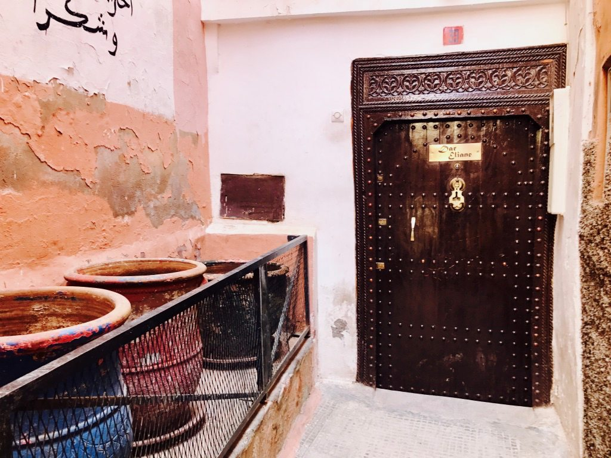
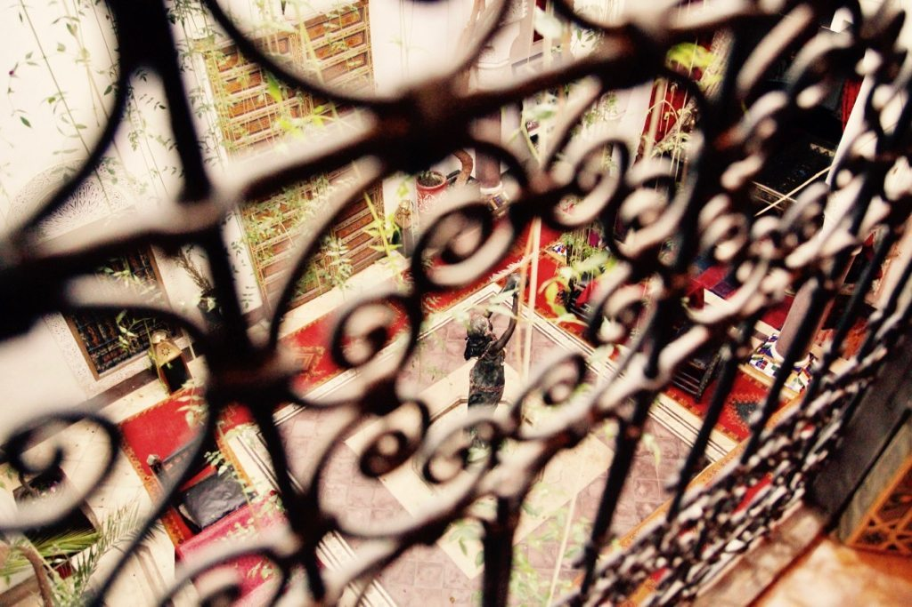
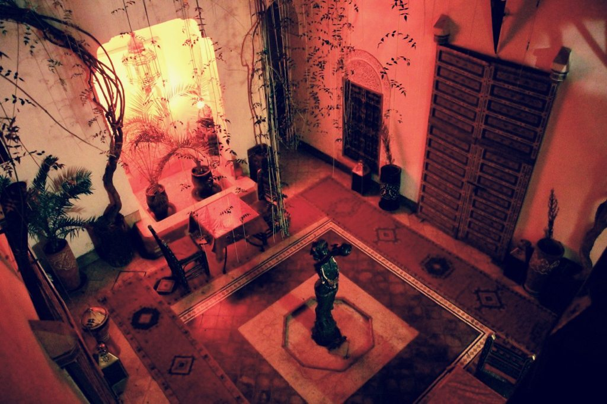

10 Questions to Ask Before You Book a Riad in Morocco
The allure of Morocco
Morocco is among the most alluring and mystical destinations in the world. Its easy access from Europe and North America place it as a great port of entry into the MENA region and the rich and colorful cultures of the Arab world. The former French colonial influences of Morocco provide some hints of Western familiarity, while still being genuinely its own place, with parts seemingly untouched for a thousand years.
Part of what makes a trip to Morocco particularly worthwhile is the ability to safely explore nearly any part of the country without fear of dangers. From the High Atlas Mountains to the Sahara Desert, and the relaxed beaches of Casablanca and Rabat, this North African paradise has something to offer every traveler: peace of mind. Morocco has its risks, just as anywhere in the world does, and if you want to be more educated about that, I encourage you to read the Morocco country profile on state.gov.
The more ancient cities, Marrakesh and Fez, in particular, are well known for their well-preserved city centers (medinas) which have seen little change in many hundreds of years. If you are going to spend time in a Moroccan city, then you are going to spend time in the medina. And if you are going to spend time in the medina, then you may as well make it your home for a few days by staying in a riad.
What is a Moroccan riad?
Riads are the traditional homes of Morocco and are found everywhere in the medinas. Riads have inward-focused architecture, with all rooms opening inward to atrium and garden, often times with a fountain. This inward design provides protection from the weather and gives residence maximum privacy and tranquility from the hectic streets just outside. The architectural features are often very detailed in mosaics and colorfully painted wood with beautiful Islamic and Berber designs.
As much as I can rave about how wonderful riads are, they are not for everyone, or for every trip type. Depending on your own amenities needs, trip requirements, and certain sensitivities, a riad might not be for you. That is why, though I strongly encourage you to stay in a riad, I first encourage you to first ask yourself (or the riad under consideration) a few questions before you book a riad to make sure that you are going to fully appreciate and enjoy your time.
Here are some questions that I learned to ask about booking a riad in Morocco.
1. How do I find the Riad?
| Knowing where your riad is at on a map is one thing, but finding it in the layberanth of a madina is another all together. Mapping apps are less reliable here, but one host gave me the tip to use the app Galileo (iOS | Android), which is an off-line map. I found it to be quite accurate a real lifesaver while between Wi-Fi hotspots. Still, your initial arrival to the riad can be quite tricky. It is advisable to arrange your host to meet you at a landmark and walk you to the riad. If you are just arriving to the city and have luggage, then the riad can send a taxi for you. This might be a bit expensive, but will serve you well for the ease and peace of mind. |

2. Can I carry my luggage very far, and through narrow, hilly streets?
Medinas are huge areas. In fact, the Fez medina is the world’s largest car-free metropolitan area, and it is built on a rather steep hillside. The roads (more like paths, really) through the medinas are narrow, rugged, and often busy with people and mules. These labyrinths are also dizzying to the most directional-savvy traveler. So before you get lost in there trying to find your riad, make sure you are up to carrying your luggage around with you under those conditions.
The Marrakech medina is much flatter and has broader roads, but the paths are even more busy with people and vendors. At the entrance of every medina you can find porters to carry your things with you, but be wary of scams. The best case is if you can get your riad to send someone to meet and walk with you.
3. Is the Riad wheelchair accessible?
I can answer this one for you: no. Medinas are not very accessible in general, and riads even less so. You can find some more modern riads on the edge of the medina, or even outside of the center, and these might be more accessible. If mobility is a concern for you, then I would caution you in your pursuit of a Moroccan trip in general. When I visited, I was in the 4th-month of recovery of a minor knee surgery. Even I could go hiking for 2 days in the High Atlas mountains, but getting around the riad was a challenge!
4. How important is reliable or fast internet to me?
Every riad I have looked at has advertised Wi-Fi, but you should take that with a grain of salt. Even if there is Wi-Fi, there is likely only a trickle of internet bandwidth. If you are relying on your lodging to provide you with the internet for uploading your days’ worth of selfies, this might not work out so well. Likewise, if you need to be connected to the Internet for work or other purposes, then a riad is likely not going to be the best fit for you.

5. Is the room on the first floor?
I strongly recommend avoiding rooms on the first floor. Rooms on the first floor are smaller, darker, and open up directly into the small public space where everyone will be coming and going, and having their meals. That means you will be losing the most amount of privacy on the first floor, as well as receiving the most interruptions from others. On the other hand, the non-ground level floors will have balcony access, more privacy, are typically larger spaces, and are very quiet.
6. Does my sleeping room have natural light?
Since riads rarely have outward-facing windows you might go crazy if you crave natural light. The rooms are often dark and poorly lit. This adds to the charm and authentic feel of the space, but you should know up front that your room will be more like a cave than a canopy.
7. How sensitive am I to smell?
Food, fragrances, gasses, animals and people are all sources of strong and varied smells. Each of these things can be pleasant or putrid. As the traditional riads are very old structures, you can count on their plumbing to be ancient as well. There can easily be some degree of smell in your riad and as you sleep, so if you are super sensitive to smell, then just go cautiously. In my experience, the ground-floor rooms could be a bit smellier than the upper floors.
Just like with the smells, riads can be noisy places if you are on the first floor. Any room not on the first floor should be just fine, though, and offer you more silence than you would get at home or at a modern hotel.

8. Can you accommodate my dietary restrictions?
If you are a vegetarian, then you will have no problem eating very well in Morocco. I especially recommend the couscous. But couscous is most notably not gluten free, and finding gluten-free anything other than straight fruits and vegetables could prove challenging. The kitchen at the riad will be as accommodating as possible, but any preference you have, you should state before they start cooking any meal you request them to make. I was never handed a menu at a riad. I was simply asked if I wanted dinner or breakfast or not. So be specific up front and ask questions about the food.
9. Do you accept credit cards for incidentals?
You might book you riad online in advance, but that does not mean that the riad can accept card payment on-site. Generally speaking, Morocco is a cash economy. If you rack up any incidental costs from the riad (taxi, meals, spa, etc…) then be sure to know in advance how you are going to pay for it at the end of your stay.
10. What recommendations can the Riad give you?
Riad owners and managers know everything about the city and everyone in it. Peer into that knowledge and experience but always be willing to go it alone in the end rather than simply take their advice. You will quickly learn in Morocco that the phrase “you’re welcome” is the Indian equivalent of “my friend.” This is not to say that they do not genuinely welcome you to their country, their shop, or their home, but just know that nothing is free and you will be expected to pay something for just about everything, no matter what expectation you inferred at the beginning of a deal (which you may or may not even be aware you are making until it is already made).
And now the real question: where can I book a riad in Morocco?
Many riads are bookable online and through tour operators. Though not a search filter on most booking sites, you can quickly identify the riads on these great booking resources just by looking at the photos and location.
If you have been to Morocco and stayed at a riad, I would love to hear your thoughts in the comments below! If you are looking to make a trip to Morocco then I am both jealous of your upcoming trip, and very excited for you. Write any questions you have in the comments below, or connect with me directly at @JudsonLMoore. Have a great time!